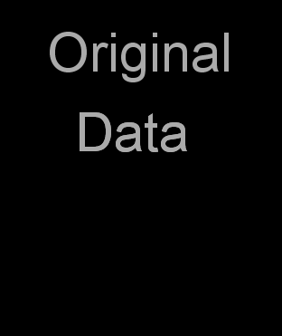

Image Registration
|
Comparing two images that need to be brought into the same spatial coordinates. |
|

|
Two types of registration. |
Image guidance is key within minimally invasive surgery.
It provides important information for the surgeon on an as-needs basis, through the use of computer generated image information.
MIS ensures shorter hospitals stays and smaller risks for the patients.
|
Comparing two images that need to be brought into the same spatial coordinates. |
|
|
|
Two types of registration. |
Rigid RegistrationIntensity Based Rigid Registration |
 |
Non-Rigid Registration |
Must use features in the image that are invariant to translation and rotation. These feature points can then register the images using a method called landmark based registration method. Average 4-Step Method: 1. Feature Detection 2. Feature Matching 3. Transform Model Estimation 4. Image Re-Sampling and Transformation |

|
Feature DetectionDistinctive objects are manually or more preferably automatically detected in the images and can be represented by their point representatives. These points are called control points. |
Feature DetectionIn the past objects were manually selected by an expert. Two main approaches to automate this task. |
Feature Based MethodsFeatures should be spread all over the image and be efficiently detectable in both images. Expected to be stable and stay at fixed positions. Comparability of feature sets is assured by the feature detector. The number of common elements in the detected sets of features should be sufficiently high. Feature-Based Methods do not work directly with image intensity values but represent information on a higher level. This makes the method suitable for different kinds of imaging such as medical imaging. |

|
Types of FeaturesRegion Features : High contrast closed-boundary regions of an appropriate size. Line Features : Representations of general line segments. (Elongated anatomic structures in MI) Point Features : The most distinctive points with respect to a specified measure of similarity. |
Types of FeaturesRegion Features detected by means of segmentation methods. |
|
Types of FeaturesPoint Features detected in most cases by following the definition of a point as a line intersection, centroid of closed-boundary region or local maxima of the wavelet transform. Defining corners is hard. Corner detection methods include SUSAN detector. Point Features include corners. Some registration techniques are using both area and feature based approaches. |
Feature MatchingMatched by means of image intensity values in their close neighbourhoods, the feature spatial distribution, or the feature symbolic description. |

|

|
Feature MatchingArea-Based Methods - Suits the registration of images which locally differ only by a translation. Any images deformed by more complex transformations will not register properly. Another disadvantage is that there is a high chance that any two non-detailed areas will be matched incorrectly. |
Feature MatchingCorrelation-Like Methods - Classic area-based methods including cross-correlation try to matching image intensities without structural analysis. |

|

|
Feature MatchingFourier Methods - Preferred when there is varying conditions (varying light intensity) or the images are corrupted with noise. Phase correlation method is based on the Fourier Shift Theorem. This computes the cross-power spectrum of the images and looks for the location of the peak in its inverse. This method has robustness against noise and illumination levels. Time savings are more significant as the image size increases. In case of varying image scales, combine polar-log mapping and phase correlation. |
Feature MatchingMutual Information Methods - Leading technique in multi modal registration. Required for medical imaging. Comparison of anatomical and functional images of the patients body can lead to a a diagnosis that would be impossible to gain otherwise. Remote sensing allows for the exploitation of other sensor types too. |

|
|
Originates in information theory, measures statistical dependency between two data sets and is particularly suitable for different modalities. This method is based upon the maximum of MI. Can be sped up by using the coarse-to-fine resolution strategy (the pyramidal approach). Can be used to match MRI images and 3D object model matching to the real scene. Gradient Descent Optimisation. |
Point-based image registrationThe Procrustes problem from linear algebra is a matrix approximation problem. |
How does it apply to image guidance?With a given three-dimensional model of the patient, it is not always easy to project it onto the patient. For example, he might be in a different position from when the scan was taken. Even if the tissue shapes match closely, we still need to find the right translation and rotation parameters to successfully map the scan onto the patient. In more difficult cases, an object of interest such as a tumour might have shrunk or grown since the scan, or there might be new tumours that appeared recently. A good projection system should take into account all such transformations or changes of tissue and still map the scan data in a satisfying way. The problems can be summarized into the following categories: - Motion correction |
Methods to solve the problemGiven that we have some form of similarity criteria, in this case usually points of interest in the image, we need to find a transformation model that satisfies these criteria well enough and then possibly optimize this model further. A first step is smoothing and re-sampling of the images, and then extracting features. We now have a measure of similarity, and can start computing the actual transformation. |
Transformation ModelsMost commonly named are rigid and non-rigid or elastic transformations, although there are semi-elastic or affine transformations that are used to approximate elastic transformations. |
B-spline based non-rigid registrationIn this section, we will shortly introduce an algorithm for non-rigid registration developed by Rueckert et al. 1999. It uses an affine model to compensate for global motion of the subject (in this case the breast). Local changes are modelled using a free-form deformation model based on B-splines. The basic idea is to manipulate an underlying mesh of control points to produce a smooth transformation. |
What is a B-spline? B-splines are, very roughly speaking, localized Bezier curves. Only neighbouring locations are considered for every point – thus the computational complexity remains low even for a high sampling rate. Another advantage is that they keep more to the original structure – even if other data points might be significantly distorted these will only affect the transformation in their direct neighbourhood.
|
How do they work, mathematically?B-splines have so called basis functions. In the algorithm described here, described in Rueckert et al. 1999, the following are used: |
B-spline basis functions |
Free-form deformationsFrom these B-splines, we can then define the free-form deformation on the object. Free-form deformations are techniques to manipulate any shape – simply put, maps between vector spaces that define a new position for every point in the given region. We can get coordinates in the transformed vector space using the 3D (since we are in a 3D space) tensor product equation, Where p(i,j,k) denotes a control point and i.e. normalised coordinates. Note that a custom weight can be assigned to each coordinate to gain more local control over the transformation. It is suggested that this weight penalizes non-rigid transformations and doesn’t affect rigid (i.e. rotation and translation) changes. |
Formulae |
Refining the transformationOnce the transformed grid coordinates are computed, these can either be refined further or used to create the output. This step consists simply of linear or cubic interpolation to get continuous data from the grid. If further refinement needs to be done, Rueckert et al. suggest that a hierarchy based combination of multiple FFDs at different resolutions and grid sampling rates is used. This will usually lead to even better results. |
|
|
Optimal transformationsAn important part of this algorithm is the aforementioned similarity measure. This is applied to find the optimal affine transformation parameters before iterating through the different resolution levels of the B-spline grid transformation. Then during the iterations to find a non-rigid transformation, it is used as part of a cost function to determine when the transformation is good enough and the algorithm should terminate. |
|
|
|
With the increased use of robotic assisted, minimally invasive, surgery this has become the ideal environdment for such things as Augmented Reality. |
|
To perceive the image as embedded the brain expects some form of occlusion/obstruction. |
|
Negatives; |
|
Techniques such as P-Q Space Rendering provide see-through vision of embedded virtual objects.
These maintain the projected anatomical detail of the eposed surface whilst aiding the surgery. |
|
images curtosy of: http://www.cs.rochester.edu/~bh/igs/ |
|
The idea of P-Q Space Rendering is to render the exposed surface as a translucent layer whilst ensuring that sufficient detail remains to aid both navigation and depth cue-ing. |
|
During broncoscopic and endoscopic procedures, P-Q Space is used heavily alongside the Shape from Shading Algorithm. This is a classical problem within the field of computer vision. It addresses the issue of extracting both surface and relative depth information from a single image. |
|
|
Below is an example of shape from shading used to pull the depth information of the left image. The results have been mathematically protrayed as a graph. |
|
| image curtosy of; http://hal.inria.fr/inria-00394230/en/ | |

|
|
E(x,y) represents the image irradiance, the amount of light falling on a surface |
|
Given the previous equation, α is assumed negliable. However when using endoscopes this cannot be assumed as the camera and light source are assumed to be near the surface.
As such, the image irradiance in this situation can be described by a constant of the camera parametres, multipled by the surface albedo, the angle between the incident ray and surface normal and a monotomically decreasing function of the surface point and light source. |

|
|
In P-Q Space representation, the angle between the normal vectors both before and after rigid body registration will remain the same for every surface point.
This means that local deformation is identified where the angle diverts from the overall mean of the 3D model. |
image curtosy of: |
What is camera calibration?Basically, the process of determining the external(position,orientation) and internal(focal length, image center, scaling factors, lens distortion etc.) parameters of a camera. Uses: - Surgery : more exactly, surgical tracking; |
Copyright: http://www.cse.unr.edu/~aerol/projecthome/ . |
|
. |
How does it work?There are several algorithms to choose from, each with its own benefits and drawbacks. However, most of them fit into one of two categories: |
One smart approach was to use a combination of both methods in order to reduce the number of necessary takes on the algorithm (can go as high as 5 times more measurements than unknowns), without significant loss in accuracy.
How does it work?Some food for thought: -How do you construct an accurate, reliable model of the typical situation? |
Copyright: http://en.wikipedia.org/wiki/Pinhole_camera |
|
We can start off with a very simple camera model- the “ideal pinhole camera”. |
Finally, while the equations for this model could be modeled in an Euclidean geometry, we might (I insist) use an alternative solution, quite fit for our purpose : homogeneous coordinates and projective geometry.
Things work somewhat like this:
- if you represent a point (x, y) in the plane, its homogeneous coordinates are of the form (xZ, yZ, Z), where Z is a randomly chosen real number (mainly, the set of all values that preserve this [xZ:yZ:Z] ratio forms an equivalence class in 3D space! ); you recover your original coordinates by setting Z to 1 - quite expected;
- alternatively, a point caractherised by 3 (or ,more generally, n ) dimensions in Euclidean Space is caractherised by 4 (n+1, respectively) homogeneous coordinates, which preserve the initial ratio in the Euclidean Space (e.g. : [x1 :x2 : … : xn : 1] );
Why does this simplify things in our problem? several reasons:
- imagine that the new coordinate in the homogeneous system (in the case of the 2D point (x,y)) was actually a coordinate in 3D space, according to the 3rd axis.
What would points in the same equivalence class represent?
What set would the set of points with fixed 3rd coordinates represent?
- translation is easier representable as a square matrix ; for example, translation of points (x,y) to points (x+t1,y1+t2), with t1 t2 fixed constants, would be modelled by the equation:
- this also means that we can model changes of coordinate system (mainly, a rotation and a translation) by product of matrices;
- moreover, it’s possible to map points at infinity; there is one point (actually, an equivalence class) for each particular direction; one of the consequences is that you can solve equations involving parallel lines much more naturally;
We're set!
What to do? Well, whatever our purpose is, we can’t really do anything without finding that camera (or projection) matrix! |
-Of course, the parameters depend on all possible factors that can influence the mapping of 3D features to the image (potentially very many);
-In our simple pinhole camera model we assume just some of these factors to be part of our matrix, and we’ll set some others later on;
-External parameters: position of the camera relative to the original system of the projected object; orientation of the camera relative to ... (it will very rarely be the case that the camera’s coordinate system is aligned with that of the object);
-Internal parameters:
-scaling factor (width-height ratio for pixels); focal length (this one is responsible for any sense of perspective in your image, and would be really difficult to model in its natural form);
-we’ll avoid in-depth modelling of focal length or distortion in the linear model; keep in mind though that because of our simplifications, higher errors are prone to occur;
Determining the camera matrix
The mathematics is not too complicated - assuming you know how to work with matrices. |
||
Copyright: http://www.umiacs.umd.edu/~ramani/cmsc828d/lecture9.pdf |
 |
This, combined with information regarding the image center and pixel size, yields us a new result. |
Determining the camera matrixUnfortunately, it is very rare that the coordinate system of the target is aligned to that of the camera. We must first perform two transformations, mainly a rotation and a translation. |
 Copyright: http://www.peterhillman.org.uk |
Well, nothing should stop you from implementing all this on your computer and start your career as a video game designer.
Definitely.
Uses for camera calibration range widely, from calibrating your personal camera, to modelling computer vision, to surgery, especially surgical tracking.
- embedded light cameras for tracking position of different instruments, relative to different markers;
- small cameras made for endoscopic interventions (calibration must be much more precise), resulting in an efficient and non-invasive way of doing some types of surgery;
- X-ray cameras (Selby's method);
- possibly 3D reconstruction of surfaces;
Many of these application might need an algorithm with a higher precision than the Direct Linear Method. For more info, Tsai's and Zhang's writings provide some non-linear methods for more specific needs. Also there's a large literature on the subject, even on the Internet. Check it out!
If the last one got your attention, the main algorithm for 3D recovery is quite easy: once you have two cameras (with known projection matrices P1, P2) which observe the same point, you have to solve the equations:
In something more visual, this translates to finding the intersection of two projective lines [image - epipolar geometry]: